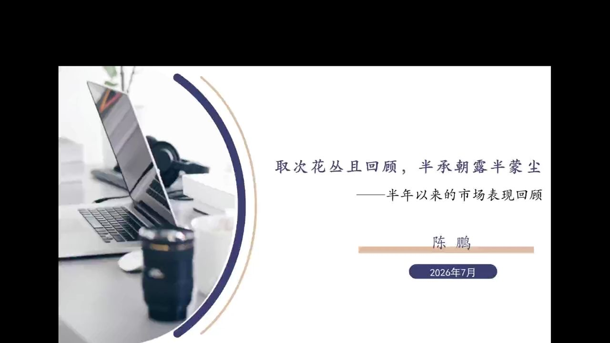
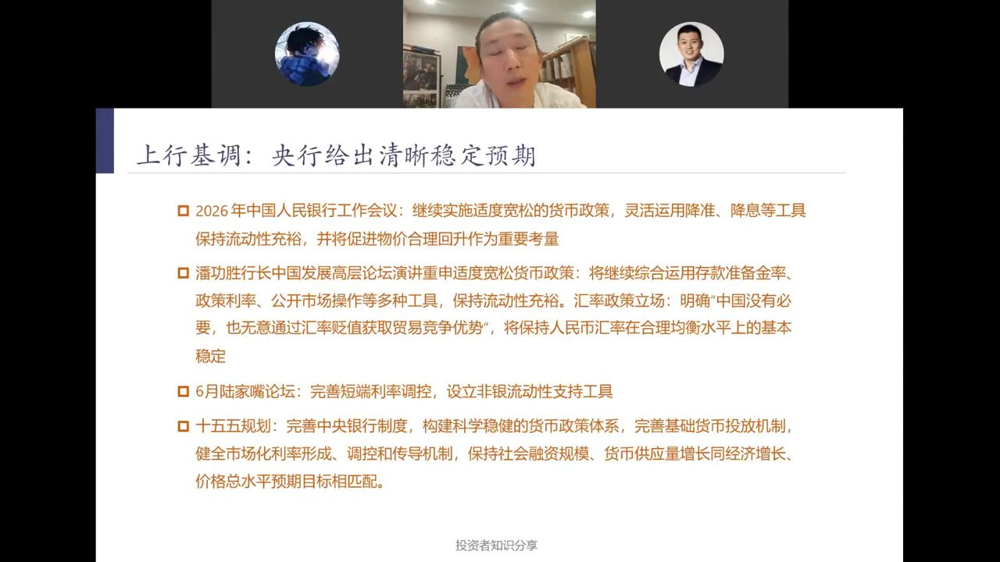
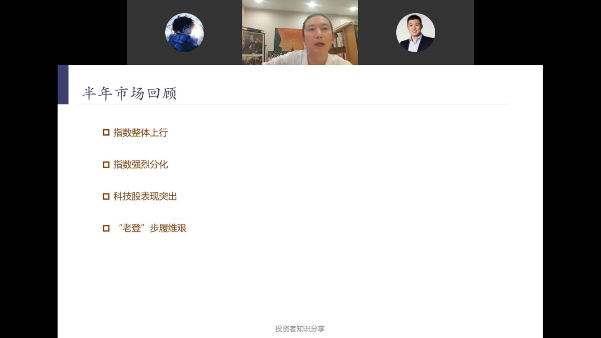
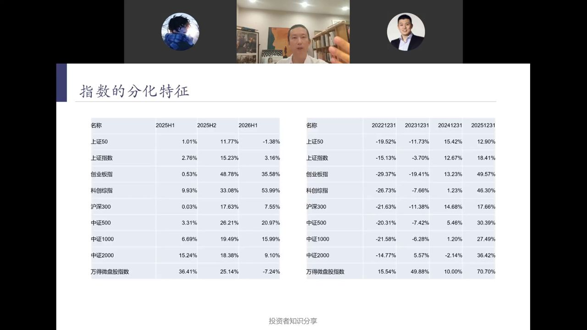
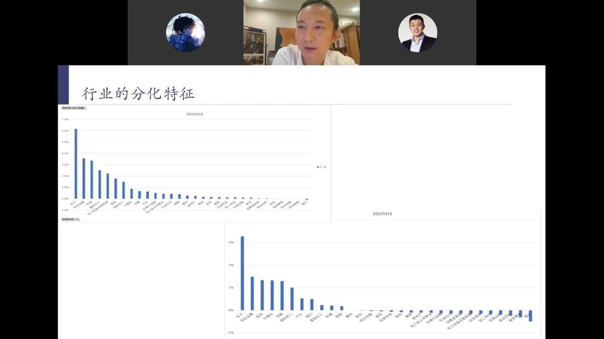
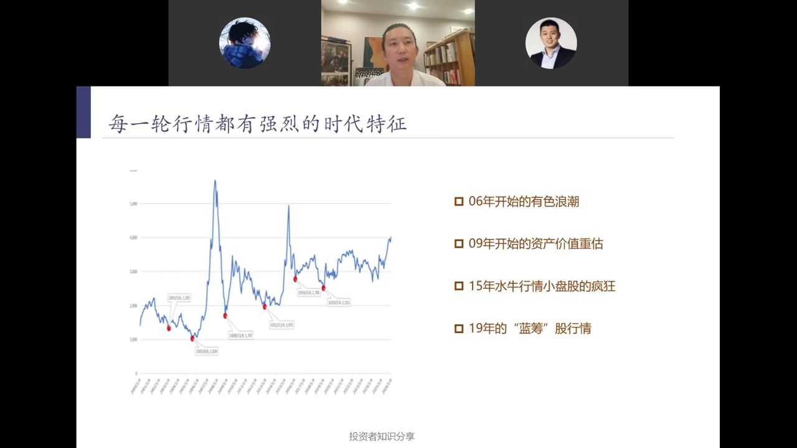
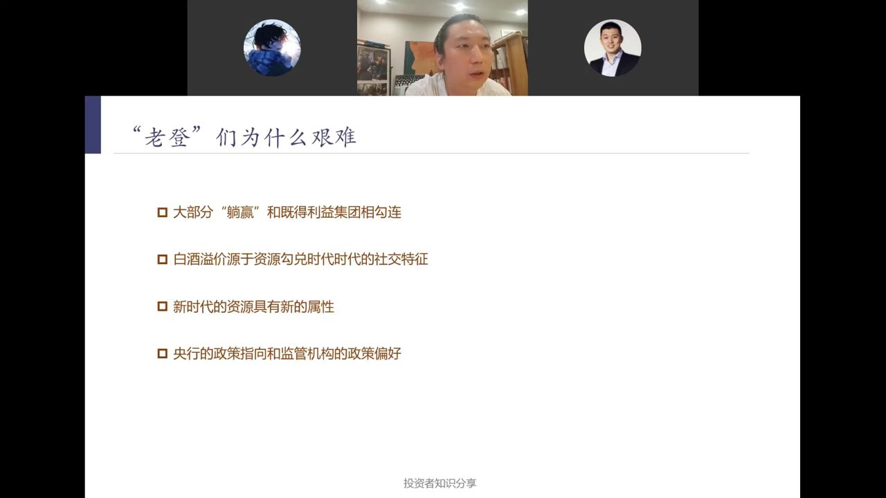
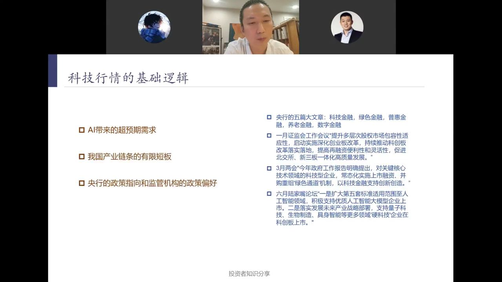
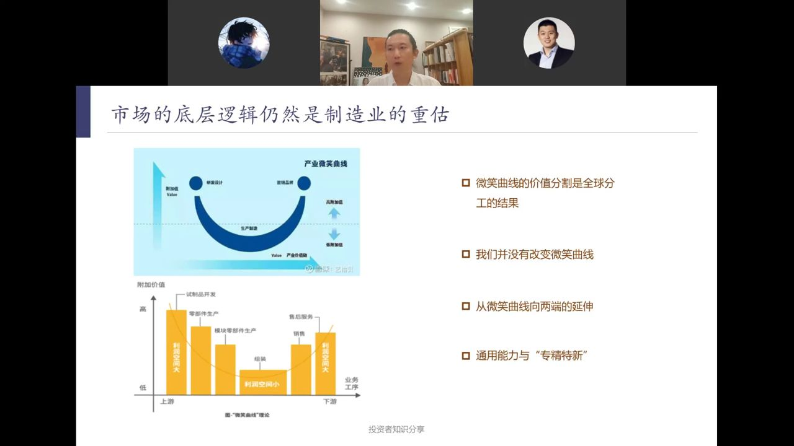
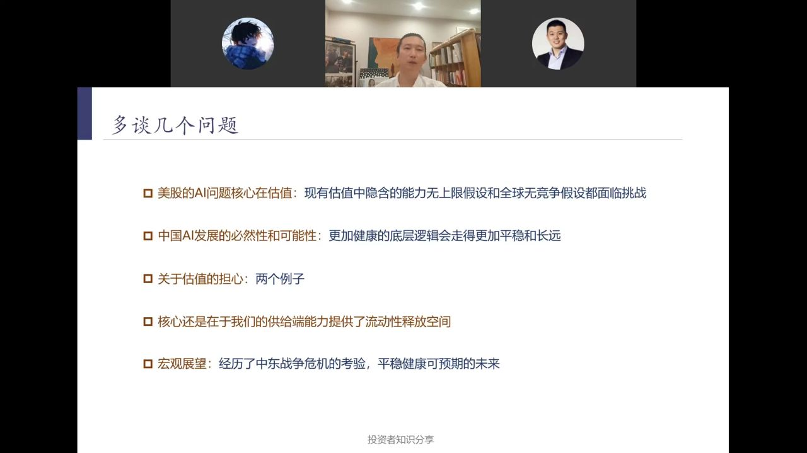

元稹《离思》原意是"曾经沧海难为水，除却巫山不是云。取次花丛懒回顾，半缘修道半缘君"——悼念亡妻，经历过沧海巫山，别处的风景再也不入法眼。
陈鹏把它改了两个字："取次花丛且回顾，半承朝露半蒙尘"。同样是站在花丛之中，一半的花带着朝露盛放，一半已经落在地上蒙上灰尘——这正是2026年上半年A股的真实写照：即便在最好的春天里，也总有让人伤感的分化。
4000点对不同人意义不同——《月亮和六便士》式的分化：有人满地捡钱，有人却在指数上涨中亏损。分析上半年市场，首先要聚焦央行，正如分析美股始终围绕美联储。

2024年之前中国处于供给端建设周期，发改委、财政部、证监会都能深度影响市场；2024年后转入需求端建设，市场核心转向央行，央行的核心是利率。
3月潘功胜的汇率表态清除了阻挡人民币持续宽松的最大障碍——央行不再认为宽松会冲击汇率，甚至隐晦表达了对人民币升值的判断。6月新任美联储主席沃什释放鹰派信号，而我方明确长期维持低利率，意味着中国货币政策获得完全独立的自主空间。
短端利率走廊从上下限合计70BP（下30BP、上40BP）收窄至上下各25BP，且伴随利率绝对水平下降——这隐晦确认了未来长周期将维持稳定低利率。非银流动性支持工具覆盖多类市场与非银资产，是金融体系的"兜底"工具。
当前正从通缩环境转向正常价格状态，各方对价格（资产价格、股价、房价、物价）的重视超过以往。央行持续呵护下，整体指数上行是可期待的。

上半年市场的四个关键词：
流动性充裕时，无明确方向的资金会先涌入市值几亿到十几亿、流通盘极小的微盘股博取最大弹性；一旦科技主线形成，资金便会从微盘股、上证50、沪深300撤出，转向科技主线。2025年微盘股指数大涨70%，2026H1创业板指、科创综指接棒领涨。

表格展示了各宽基指数在不同时段的涨跌幅，呈现明显的"风水轮流转"：
有筛选机制的指数长周期会自我修复——上证50前十大权重股中目前仅寒武纪属于新时代标的，但个股上涨后会被调入上证50，未来与市场的偏离度将收窄。熊市乃至牛市初期高分红指数表现好，往往意味着货币政策已逆转、新一轮行情即将展开。

分行业看，2025年全年电子、有色金属是表现最佳的两大行业，且上半年就已走出行情——此时跟进可获得可观收益，这是长周期行情而非短线波动。
2024年货币政策逆转带来流动性冲击，资金大量涌入高分红公司推高股价、分红率回落；市场运行有其明确逻辑，每轮周期都会诞生一个清晰的运行主题。

陈鹏复盘了A股四轮标志性行情，每一轮都深深打上时代烙印：
金砖国家尤其是中国融入全球经济循环，大量密集劳动力进入全球体系，带来资本与资源的稀缺。当时陈鹏所在团队测算某有色龙头2005年每股业绩仅六七毛、股价十二三块，预估2006年可达6元——实际达6.9元（金属涨价超预期，公司还藏了3元利润）。
08年A股暴跌的核心是自身数次暴力加息（央行动作对资本市场至关重要）。08年跌得最惨的银行、地产、煤炭，在09年行情中走出清晰超额收益。
"大众创业万众创新"政策推动，场外融资杠杆一度达1:10，但当时A股并未形成特别清晰的行情主线。
市场默认可依托全球供应链保障供给端，叠加宽松预期需求强劲，房地产涨幅极高——这也是地产链条最后一次最疯狂的表演。当时多数人漠视了18年底提出的35个"卡脖子"项目。

PPT列出四条原因：
高端白酒此前的溢价，源于"资源勾兑时代"的社交属性——政商关系、地产繁荣下，酒桌是资源整合的核心场景。但当下新兴科技企业整合资源已无需依托酒桌社交，高端白酒正在回归消费属性，这个过程相当难熬。
如果投资消费品的逻辑仅基于"价格持续提升"，那它与钢铁、水泥、矿产等周期品没有本质区别——茅台零售价从900多元被推至3000多元后又回落，产品价格具备极强周期属性，不应给予远高于周期品的市盈率。陈鹏直言始终难以理解茅台靠提价支撑估值的逻辑。

科技行情有三大支柱：
国内正推进产业升级，AI催生超预期需求。光模块赛道的中际旭创、新易盛等企业都能做好产品——这个门槛对越南、印度很高，但对国内产业链并不高，叠加超预期需求带来的高毛利，相关企业业绩迎来"需求×份额×毛利"三重提升的双击。
我国产业链整体已非常完整，正集中资源补有限短板。半导体存储正技术爬坡，全球存储产能短缺倒逼此前打压我方的海外厂商向长江存储、长鑫抛出合作意向，苹果也拟在华售手机采用国产存储器件。很多产业短板并非基础科学问题，而是工程应用领域的know-how积累——类似稀土分离、光刻机，核心是海量工艺参数的最优组合调试，只要投入足够时间、人力、资金就能逐步解决。
监管层支持科技产业价格上行，助力科技企业低成本融资扩产——产能建设的指挥棒指向十分清晰。科技股当下表现十分正常：需求、份额、毛利三重提升，即便无法预测未来，充分理解已出现的现象就足以获得不错收益。

微笑曲线的价值分割是全球分工的结果：西方占据研发设计、营销品牌两端的高附加值环节，中国工厂长期在中游制造端"内卷"。
当前国内利率水平远低于海外高利率环境，无需对标海外市盈率——可立足自身独立货币政策逻辑。不少优秀制造企业仍在微笑曲线两端爬坡、估值处于低位，未被市场充分认知。

以思特威（CMOS图像传感器）为例：2023年利润仅千万、市值超百亿、PE近1000倍；2024年利润达4亿、市值200多亿、PE降至约60倍；后续市值涨至300亿、PE进一步降到30倍。2023年全球CIS格局索尼占60%、三星20%，国内思特威、韦尔豪威技术已逼近索尼——技术领先者占据最大份额，份额、毛利、研发同步提升，利润高速增长可消化高PE。
高PE个股的买入前提：需对个股有极强认知，确认未来1-2年可回落至10-20倍低估值、未来盈利及估值绝对水平偏低。这不是鼓励追高，而是强调PE只是当下的一项指标。去年底布局底部高估值商业航天标的，也是基于发射排期密集、浮筹出清的判断。
现有估值中隐含的"能力无上限"和"全球无竞争"两大假设都面临挑战：能替代人类几乎所有思考的大模型并不现实——成本呈指数级上行，但能力仅线性增长，成本翻一番仅带来10%-20%能力提升；若要能力翻倍，需投入相当于美国全年GDP的全部资源。
中国AI发展的必然性和可能性：更健康的底层逻辑会走得更平稳长远。中国不会放弃AI，当前能力接近美国且成本更低、未来上限更高。美国AI估值隐含的泡沫未来将破裂，对依赖美国AI投资的公司造成冲击，但对中国AI产业链反而是正面促进。
今年经济面临的最大冲击已经出现且平稳度过，依托适配的货币政策，经济平稳健康可预期。美国可支配资源不足，陷入"保美股与稳美元、控通胀与保GDP"难以兼顾的困境，根源是供应链主导权已转移。中国能实现低利率下低通胀、解决问题成本低的资源富余状态。
投资关注市场的核心切入点是货币，判断疯牛还是慢牛的关键是货币来源（印钞能力）和货币节奏（投放方向）。人民币计价资产整体至今仍被低估，这是伴随经济体制转型、全球金融秩序重塑的5-10年长周期——2024年只完成了补全最不合理部分的阶段性任务，结构性调整才刚起步。